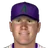
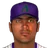
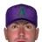

Major League Baseball · West Division
Arizona Diamondbacks
18-24 .429 · 8th in West Division, 9 GB
Run differential -10 (181 RS, 191 RA) · Pythagorean 20-22 · L10 4-6 · Streak W1 · Home 13-9 · Road 5-15
Bank One Ballpark (capacity 49,033)
High Minors:  Sierra Vista Humingbirds · Low Minors:
Sierra Vista Humingbirds · Low Minors:  Tuscon Saguros
Tuscon Saguros
Depth chart & lineupsPayrollTransactionsLeague financesStaffBallparkRecord bookThe season so far
Season So Far games over .500 by date
Recent Results
Farm System automatic farm score
20th of 20 in the MLB with a farm score of 2.1 (29 players 25 or younger with stats at the affiliates). All farm systems →
Roster (28)
| # | Player | Pos | B/T | Age |
|---|---|---|---|---|
| 55 | Shawn Estes | SP | S/L | 29 |
| 45 | Tom Gordon | SP | R/R | 34 |
| 41 | Pat Hentgen | SP | R/R | 33 |
| 7 | Ramon Ortiz | SP | R/R | 28 |
| 31 | Robert Person | SP | R/R | 32 |
| 10 | Paxton Crawford IL-60 | RP | R/R | 24 |
| 10 | Paxton Crawford IL-60 | RP | R/R | 24 |
| 49 | Felix Heredia | RP | L/L | 26 |
| 22 | Jose Paniagua | RP | R/R | 28 |
| 37 | Hipolito Pichardo | RP | R/R | 32 |
| 21 | Dan Plesac | RP | L/L | 40 |
| 14 | Anthony Telford | RP | R/R | 36 |
| 48 | Dave Veres | RP | R/R | 35 |
| 25 | Don Wengert | RP | R/R | 32 |
| 9 | Todd Hundley | C | S/R | 32 |
| 18 | Tom Prince | C | R/R | 37 |
| 44 | Erubiel Durazo | 1B | L/L | 28 |
| 16 | Enrique Wilson | 2B | S/R | 28 |
| 42 | Ryan Radmanovich | 3B | L/R | 30 |
| 19 | Robin Ventura | 3B | L/R | 34 |
| 8 | Jay Woolf | SS | S/R | 24 |
| 63 |  John Barnes | LF | R/R | 26 |
| 47 | Shane Spencer | LF | R/R | 30 |
| 12 |  Raul Gonzalez | CF | R/R | 28 |
| 1 | Chris Stynes | CF | R/R | 29 |
| 11 | Matt Lawton | RF | L/R | 30 |
| 4 |  Michael Restovich | RF | R/R | 23 |
| 97 | RF | R/R | 27 |
2002 Batting
| Player | G | PA | AB | R | H | 2B | 3B | HR | RBI | BB | K | SB | AVG | OBP | SLG | OPS |
|---|---|---|---|---|---|---|---|---|---|---|---|---|---|---|---|---|
| Erubiel Durazo | 41 | 185 | 160 | 17 | 37 | 9 | 0 | 7 | 24 | 22 | 38 | 0 | .231 | .330 | .419 | .748 |
| Matt Lawton | 41 | 178 | 155 | 23 | 42 | 7 | 0 | 4 | 15 | 18 | 18 | 0 | .271 | .343 | .394 | .736 |
| Robin Ventura | 40 | 175 | 144 | 24 | 37 | 9 | 0 | 6 | 20 | 31 | 28 | 1 | .257 | .389 | .444 | .833 |
| Shane Spencer | 39 | 171 | 156 | 23 | 43 | 9 | 1 | 6 | 20 | 14 | 28 | 0 | .276 | .339 | .462 | .801 |
| Chris Stynes | 39 | 165 | 153 | 14 | 36 | 7 | 0 | 6 | 24 | 9 | 24 | 2 | .235 | .274 | .399 | .673 |
| Raul Gonzalez | 41 | 157 | 142 | 23 | 48 | 7 | 0 | 4 | 15 | 13 | 28 | 3 | .338 | .389 | .472 | .860 |
| Enrique Wilson | 39 | 153 | 140 | 12 | 34 | 3 | 1 | 1 | 12 | 12 | 22 | 1 | .243 | .301 | .300 | .601 |
| Todd Hundley | 34 | 142 | 129 | 15 | 35 | 9 | 0 | 6 | 21 | 11 | 38 | 0 | .271 | .331 | .481 | .812 |
| Jay Woolf | 31 | 122 | 105 | 15 | 20 | 4 | 0 | 2 | 5 | 8 | 24 | 3 | .190 | .283 | .286 | .569 |
| Tom Prince | 22 | 90 | 77 | 6 | 17 | 6 | 0 | 0 | 6 | 9 | 16 | 1 | .221 | .322 | .299 | .621 |
| Michael Restovich | 12 | 38 | 35 | 5 | 12 | 5 | 0 | 3 | 12 | 3 | 7 | 2 | .343 | .395 | .743 | 1.138 |
| Ryan Radmanovich | 7 | 25 | 23 | 1 | 4 | 1 | 0 | 0 | 1 | 1 | 8 | 0 | .174 | .240 | .217 | .457 |
| John Barnes | 6 | 14 | 14 | 2 | 3 | 2 | 0 | 0 | 1 | 0 | 5 | 0 | .214 | .214 | .357 | .571 |
| Willie Romero | 1 | 4 | 4 | 1 | 1 | 0 | 0 | 0 | 0 | 0 | 0 | 0 | .250 | .250 | .250 | .500 |
| Jalal Leach | 2 | 1 | 1 | 0 | 0 | 0 | 0 | 0 | 0 | 0 | 0 | 0 | .000 | .000 | .000 | .000 |
| Team | 42 | 1620 | 1438 | 181 | 369 | 78 | 2 | 45 | 176 | 151 | 284 | 13 | .257 | .331 | .408 | .738 |
2002 Batting, Advanced
| Player | PA | AVG | OBP | SLG | OPS+ | ISO | BABIP | BB% | K% | WPA | UBR | WAR |
|---|---|---|---|---|---|---|---|---|---|---|---|---|
| Erubiel Durazo | 185 | .231 | .330 | .419 | 102 | .188 | .259 | 11.9% | 20.5% | 0.45 | -2.9 | -0.2 |
| Matt Lawton | 178 | .271 | .343 | .394 | 100 | .123 | .277 | 10.1% | 10.1% | -0.26 | -2.1 | 0.4 |
| Robin Ventura | 175 | .257 | .389 | .444 | 126 | .188 | .282 | 17.7% | 16.0% | -0.19 | -3.0 | 1.1 |
| Shane Spencer | 171 | .276 | .339 | .462 | 115 | .186 | .303 | 8.2% | 16.4% | 1.15 | -1.9 | 0.6 |
| Chris Stynes | 165 | .235 | .274 | .399 | 80 | .163 | .240 | 5.5% | 14.5% | -1.29 | -0.7 | -0.2 |
| Raul Gonzalez | 157 | .338 | .389 | .472 | 132 | .134 | .393 | 8.3% | 17.8% | 0.92 | -1.2 | 1.2 |
| Enrique Wilson | 153 | .243 | .301 | .300 | 64 | .057 | .280 | 7.8% | 14.4% | -1.13 | -1.0 | -0.4 |
| Todd Hundley | 142 | .271 | .331 | .481 | 117 | .209 | .337 | 7.7% | 26.8% | 0.48 | -0.2 | 0.8 |
| Jay Woolf | 122 | .190 | .283 | .286 | 56 | .095 | .225 | 6.6% | 19.7% | -0.83 | -0.9 | -0.4 |
| Tom Prince | 90 | .221 | .322 | .299 | 71 | .078 | .274 | 10.0% | 17.8% | -1.01 | -0.7 | 0.0 |
| Michael Restovich | 38 | .343 | .395 | .743 | 199 | .400 | .360 | 7.9% | 18.4% | 0.89 | -0.3 | 0.6 |
| Ryan Radmanovich | 25 | .174 | .240 | .217 | 26 | .043 | .267 | 4.0% | 32.0% | -0.26 | -0.5 | -0.2 |
| John Barnes | 14 | .214 | .214 | .357 | 51 | .143 | .333 | 0.0% | 35.7% | -0.04 | -0.4 | -0.1 |
| Willie Romero | 4 | .250 | .250 | .250 | 37 | .000 | .250 | 0.0% | 0.0% | -0.01 | 0.0 | 0.0 |
| Jalal Leach | 1 | .000 | .000 | .000 | -100 | .000 | .000 | 0.0% | 0.0% | 0.00 | 0.0 | 0.0 |
| Team | 1620 | .257 | .331 | .408 | 99 | .151 | .289 | 9.3% | 17.5% | -1.14 | -15.8 | 3.1 |
2002 Pitching
| Pitcher | G | GS | W | L | SV | IP | H | R | ER | BB | K | HR | ERA | WHIP |
|---|---|---|---|---|---|---|---|---|---|---|---|---|---|---|
| Tom Gordon | 9 | 9 | 3 | 5 | 0 | 61.1 | 54 | 29 | 24 | 10 | 65 | 4 | 3.52 | 1.04 |
| Robert Person | 9 | 9 | 4 | 3 | 0 | 59.1 | 53 | 27 | 26 | 20 | 56 | 9 | 3.94 | 1.23 |
| Shawn Estes | 9 | 9 | 2 | 3 | 0 | 54.0 | 56 | 38 | 37 | 26 | 46 | 4 | 6.17 | 1.52 |
| Ramon Ortiz | 8 | 8 | 2 | 6 | 0 | 52.1 | 54 | 30 | 27 | 13 | 38 | 7 | 4.64 | 1.28 |
| Pat Hentgen | 7 | 7 | 3 | 3 | 0 | 43.0 | 39 | 23 | 20 | 18 | 32 | 7 | 4.19 | 1.33 |
| Dave Veres | 14 | 0 | 0 | 1 | 0 | 20.1 | 14 | 6 | 6 | 2 | 22 | 4 | 2.66 | 0.79 |
| Hipolito Pichardo | 14 | 0 | 0 | 1 | 1 | 20.0 | 20 | 12 | 12 | 5 | 19 | 4 | 5.40 | 1.25 |
| Don Wengert | 14 | 0 | 0 | 0 | 5 | 16.0 | 13 | 3 | 3 | 10 | 8 | 0 | 1.69 | 1.44 |
| Anthony Telford | 9 | 0 | 1 | 0 | 0 | 16.0 | 18 | 8 | 8 | 6 | 11 | 2 | 4.50 | 1.50 |
| Jose Paniagua | 11 | 0 | 2 | 0 | 0 | 12.0 | 6 | 5 | 5 | 7 | 10 | 2 | 3.75 | 1.08 |
| Felix Heredia | 6 | 0 | 1 | 0 | 1 | 5.0 | 1 | 1 | 1 | 4 | 5 | 0 | 1.80 | 1.00 |
| Dan Plesac | 11 | 0 | 0 | 2 | 0 | 4.2 | 13 | 7 | 6 | 2 | 7 | 2 | 11.57 | 3.21 |
| Paxton Crawford | 5 | 0 | 0 | 0 | 0 | 4.1 | 2 | 1 | 1 | 1 | 3 | 1 | 2.08 | 0.69 |
| Scott Erickson | 1 | 0 | 0 | 0 | 0 | 2.1 | 4 | 1 | 1 | 0 | 3 | 0 | 3.86 | 1.71 |
| Team | 42 | 42 | 18 | 24 | 7 | 370.2 | 347 | 191 | 177 | 124 | 325 | 46 | 4.30 | 1.27 |
2002 Pitching, Advanced
| Pitcher | IP | ERA | WHIP | K/9 | BB/9 | HR/9 | K% | BB% | K-BB% | FIP | ERA+ | GB% | WPA | WAR |
|---|---|---|---|---|---|---|---|---|---|---|---|---|---|---|
| Tom Gordon | 61.1 | 3.52 | 1.04 | 9.5 | 1.5 | 0.6 | 25.7% | 4.0% | 21.7% | 2.11 | 116 | 40.9% | -0.47 | 2.6 |
| Robert Person | 59.1 | 3.94 | 1.23 | 8.5 | 3.0 | 1.4 | 22.4% | 8.0% | 14.4% | 4.05 | 103 | 48.7% | -0.35 | 0.9 |
| Shawn Estes | 54.0 | 6.17 | 1.52 | 7.7 | 4.3 | 0.7 | 19.2% | 10.8% | 8.3% | 3.51 | 66 | 56.5% | -1.27 | 1.2 |
| Ramon Ortiz | 52.1 | 4.64 | 1.28 | 6.5 | 2.2 | 1.2 | 17.0% | 5.8% | 11.2% | 3.78 | 88 | 54.8% | -0.52 | 0.9 |
| Pat Hentgen | 43.0 | 4.19 | 1.33 | 6.7 | 3.8 | 1.5 | 17.0% | 9.6% | 7.4% | 4.77 | 97 | 43.6% | -0.46 | 0.3 |
| Dave Veres | 20.1 | 2.66 | 0.79 | 9.7 | 0.9 | 1.8 | 29.3% | 2.7% | 26.7% | 3.44 | 153 | 54.1% | -0.28 | 0.2 |
| Hipolito Pichardo | 20.0 | 5.40 | 1.25 | 8.6 | 2.2 | 1.8 | 22.4% | 5.9% | 16.5% | 4.50 | 75 | 51.3% | -0.02 | 0.0 |
| Don Wengert | 16.0 | 1.69 | 1.44 | 4.5 | 5.6 | 0.0 | 11.8% | 14.7% | -2.9% | 3.81 | 242 | 65.7% | 1.41 | 0.2 |
| Anthony Telford | 16.0 | 4.50 | 1.50 | 6.2 | 3.4 | 1.1 | 15.5% | 8.5% | 7.0% | 4.12 | 91 | 58.8% | -0.08 | 0.1 |
| Jose Paniagua | 12.0 | 3.75 | 1.08 | 7.5 | 5.2 | 1.5 | 20.8% | 14.6% | 6.2% | 5.25 | 109 | 50.0% | 0.08 | -0.1 |
| Felix Heredia | 5.0 | 1.80 | 1.00 | 9.0 | 7.2 | 0.0 | 25.0% | 20.0% | 5.0% | 3.15 | 226 | 40.0% | 0.19 | 0.1 |
| Dan Plesac | 4.2 | 11.57 | 3.21 | 13.5 | 3.9 | 3.9 | 25.0% | 7.1% | 17.9% | 6.61 | 35 | 60.0% | -0.81 | -0.1 |
| Paxton Crawford | 4.1 | 2.08 | 0.69 | 6.2 | 2.1 | 2.1 | 18.8% | 6.2% | 12.5% | 5.06 | 196 | 60.0% | 0.04 | 0.0 |
| Scott Erickson | 2.1 | 3.86 | 1.71 | 11.6 | 0.0 | 0.0 | 27.3% | 0.0% | 27.3% | 0.18 | 106 | 25.0% | 0.00 | 0.1 |
| Team | 370.2 | 4.30 | 1.27 | 7.9 | 3.0 | 1.1 | 20.6% | 7.9% | 12.7% | 3.73 | 95 | 50.6% | -2.55 | 6.2 |
2002 Fielding
| Player | Pos | G | GS | Inn | TC | PO | A | E | DP | FPct | ZR | Arm | Framing |
|---|---|---|---|---|---|---|---|---|---|---|---|---|---|
| Randy Johnson | P | 35 | 35 | 271.2 | 37 | 4 | 28 | 5 | 2 | .865 | 0.0 | - | - |
| Curt Schilling | P | 35 | 35 | 256.2 | 37 | 15 | 21 | 1 | 4 | .973 | 0.0 | - | - |
| Randy Johnson | P | 35 | 34 | 249.2 | 33 | 2 | 27 | 4 | 1 | .879 | 0.0 | - | - |
| Randy Johnson | P | 35 | 35 | 248.2 | 30 | 5 | 22 | 3 | 1 | .900 | 0.0 | - | - |
| Andy Benes | P | 34 | 34 | 231.1 | 48 | 23 | 25 | 0 | 2 | 1.000 | 0.0 | - | - |
| Omar Daal | P | 32 | 32 | 214.2 | 49 | 13 | 34 | 2 | 2 | .959 | 0.0 | - | - |
| Brian Anderson | P | 33 | 32 | 213.1 | 61 | 13 | 47 | 1 | 4 | .984 | 0.0 | - | - |
| Brian Anderson | P | 32 | 32 | 208.0 | 59 | 11 | 46 | 2 | 4 | .966 | 0.0 | - | - |
| Andy Benes | P | 33 | 32 | 198.1 | 30 | 13 | 15 | 2 | 1 | .933 | 0.0 | - | - |
| Armando Reynoso | P | 31 | 30 | 170.2 | 49 | 14 | 34 | 1 | 3 | .980 | 0.0 | - | - |
| Armando Reynoso | P | 31 | 27 | 167.0 | 43 | 12 | 28 | 3 | 4 | .930 | 0.0 | - | - |
| Omar Daal | P | 33 | 23 | 162.2 | 40 | 6 | 33 | 1 | 2 | .975 | 0.0 | - | - |
| Holbrook Blair | P | 23 | 23 | 146.2 | 40 | 10 | 29 | 1 | 3 | .975 | 0.0 | - | - |
| Miguel Batista | P | 48 | 18 | 139.1 | 25 | 7 | 17 | 1 | 1 | .960 | 0.0 | - | - |
| Brian Anderson | P | 29 | 22 | 133.1 | 43 | 9 | 32 | 2 | 2 | .953 | 0.0 | - | - |
| Brian Anderson | P | 31 | 19 | 130.0 | 48 | 10 | 36 | 2 | 1 | .958 | 0.0 | - | - |
| Amaury Telemaco | P | 27 | 18 | 121.0 | 28 | 11 | 15 | 2 | 0 | .929 | 0.0 | - | - |
| Todd Stottlemyre | P | 17 | 17 | 101.1 | 21 | 8 | 12 | 1 | 1 | .952 | 0.0 | - | - |
| Mike Morgan | P | 60 | 4 | 101.2 | 18 | 5 | 13 | 0 | 1 | 1.000 | 0.0 | - | - |
| Byung-hyun Kim | P | 78 | 0 | 98.0 | 24 | 4 | 19 | 1 | 0 | .958 | 0.0 | - | - |
| Curt Schilling | P | 13 | 13 | 97.2 | 16 | 5 | 11 | 0 | 0 | 1.000 | 0.0 | - | - |
| Omar Daal | P | 20 | 16 | 96.0 | 27 | 5 | 18 | 4 | 0 | .852 | 0.0 | - | - |
| Todd Stottlemyre | P | 18 | 18 | 95.1 | 22 | 4 | 17 | 1 | 1 | .955 | 0.0 | - | - |
| Robert Ellis | P | 19 | 17 | 92.0 | 20 | 8 | 12 | 0 | 0 | 1.000 | 0.0 | - | - |
| Albie Lopez | P | 13 | 13 | 81.0 | 13 | 1 | 12 | 0 | 0 | 1.000 | 0.0 | - | - |
| Clint Sodowsky | P | 45 | 6 | 77.2 | 17 | 4 | 12 | 1 | 1 | .941 | 0.0 | - | - |
| Greg Swindell | P | 64 | 0 | 76.0 | 13 | 1 | 12 | 0 | 0 | 1.000 | 0.0 | - | - |
| Byung-hyun Kim | P | 61 | 1 | 70.2 | 10 | 2 | 7 | 1 | 0 | .900 | 0.0 | - | - |
| Gregg Olson | P | 64 | 0 | 68.2 | 11 | 4 | 7 | 0 | 0 | 1.000 | 0.0 | - | - |
| Jeff Suppan | P | 13 | 13 | 66.0 | 21 | 6 | 15 | 0 | 1 | 1.000 | 0.0 | - | - |
| Greg Swindell | P | 63 | 0 | 64.2 | 13 | 3 | 10 | 0 | 2 | 1.000 | 0.0 | - | - |
| Russ Springer | P | 52 | 0 | 62.0 | 6 | 1 | 4 | 1 | 1 | .833 | 0.0 | - | - |
| Tom Gordon | P | 9 | 9 | 61.1 | 7 | 1 | 6 | 0 | 0 | 1.000 | -0.9 | - | - |
| Geraldo Guzman | P | 13 | 10 | 60.1 | 3 | 0 | 3 | 0 | 0 | 1.000 | 0.0 | - | - |
| Gregg Olson | P | 61 | 0 | 60.2 | 13 | 4 | 9 | 0 | 0 | 1.000 | 0.0 | - | - |
| Robert Person | P | 9 | 9 | 59.1 | 9 | 8 | 1 | 0 | 0 | 1.000 | 1.0 | - | - |
| Shawn Estes | P | 9 | 9 | 54.0 | 11 | 4 | 7 | 0 | 1 | 1.000 | -0.6 | - | - |
| Greg Swindell | P | 64 | 0 | 53.2 | 4 | 1 | 3 | 0 | 1 | 1.000 | 0.0 | - | - |
| Ramon Ortiz | P | 8 | 8 | 52.1 | 12 | 2 | 9 | 1 | 1 | .917 | -0.6 | - | - |
| Erik Sabel | P | 42 | 0 | 51.1 | 8 | 3 | 5 | 0 | 1 | 1.000 | 0.0 | - | - |
| Troy Brohawn | P | 59 | 0 | 49.1 | 10 | 2 | 8 | 0 | 1 | 1.000 | 0.0 | - | - |
| Darren Holmes | P | 44 | 0 | 48.2 | 12 | 6 | 5 | 1 | 1 | .917 | 0.0 | - | - |
| Armando Reynoso | P | 9 | 9 | 46.2 | 13 | 1 | 11 | 1 | 2 | .923 | 0.0 | - | - |
| Matt Mantei | P | 47 | 0 | 45.1 | 7 | 4 | 2 | 1 | 1 | .857 | 0.0 | - | - |
| Felix Rodriguez | P | 43 | 0 | 44.0 | 13 | 1 | 12 | 0 | 0 | 1.000 | 0.0 | - | - |
| Willie Banks | P | 33 | 0 | 43.2 | 13 | 7 | 6 | 0 | 0 | 1.000 | 0.0 | - | - |
| Pat Hentgen | P | 7 | 7 | 43.0 | 5 | 3 | 2 | 0 | 0 | 1.000 | 0.5 | - | - |
| Bobby Witt | P | 14 | 7 | 43.1 | 7 | 1 | 6 | 0 | 0 | 1.000 | 0.0 | - | - |
| Bret Prinz | P | 46 | 0 | 41.0 | 9 | 3 | 6 | 0 | 1 | 1.000 | 0.0 | - | - |
| Dan Plesac | P | 62 | 0 | 40.0 | 2 | 0 | 2 | 0 | 0 | 1.000 | 0.0 | - | - |
| Bobby Chouinard | P | 32 | 0 | 40.1 | 9 | 2 | 6 | 1 | 1 | .889 | 0.0 | - | - |
| Bobby Chouinard | P | 26 | 2 | 38.1 | 6 | 3 | 3 | 0 | 0 | 1.000 | 0.0 | - | - |
| Mike Morgan | P | 31 | 1 | 38.0 | 1 | 0 | 0 | 1 | 0 | .000 | 0.0 | - | - |
| Alan Embree | P | 35 | 0 | 35.0 | 3 | 2 | 1 | 0 | 0 | 1.000 | 0.0 | - | - |
| Vicente Padilla | P | 27 | 0 | 35.0 | 6 | 3 | 3 | 0 | 0 | 1.000 | 0.0 | - | - |
| Vladimir Nunez | P | 27 | 0 | 34.0 | 7 | 1 | 6 | 0 | 0 | 1.000 | 0.0 | - | - |
| John Frascatore | P | 26 | 0 | 33.0 | 3 | 1 | 2 | 0 | 0 | 1.000 | 0.0 | - | - |
| Bob Wolcott | P | 6 | 6 | 33.0 | 6 | 3 | 2 | 1 | 1 | .833 | 0.0 | - | - |
| Russ Springer | P | 26 | 0 | 32.2 | 3 | 2 | 0 | 1 | 0 | .667 | 0.0 | - | - |
| Aaron Small | P | 23 | 0 | 31.2 | 2 | 1 | 1 | 0 | 0 | 1.000 | 0.0 | - | - |
| Matt Mantei | P | 30 | 0 | 29.0 | 5 | 1 | 4 | 0 | 0 | 1.000 | 0.0 | - | - |
| Byung-hyun Kim | P | 25 | 0 | 27.1 | 9 | 2 | 7 | 0 | 0 | 1.000 | 0.0 | - | - |
| Nick Bierbrodt | P | 5 | 5 | 23.0 | 9 | 1 | 8 | 0 | 1 | 1.000 | 0.0 | - | - |
| Matos Adamson | P | 5 | 5 | 23.0 | 5 | 0 | 4 | 1 | 0 | .800 | 0.0 | - | - |
| Lester Brow | P | 17 | 0 | 21.1 | 7 | 5 | 1 | 1 | 0 | .857 | 0.0 | - | - |
| Dan Plesac | P | 34 | 0 | 21.2 | 5 | 1 | 4 | 0 | 0 | 1.000 | 0.0 | - | - |
| Hipolito Pichardo | P | 14 | 0 | 20.0 | 1 | 0 | 1 | 0 | 0 | 1.000 | 0.0 | - | - |
| Dave Veres | P | 14 | 0 | 20.1 | 1 | 1 | 0 | 0 | 0 | 1.000 | 0.0 | - | - |
| Russ Springer | P | 18 | 0 | 17.2 | 5 | 1 | 3 | 1 | 0 | .800 | 0.0 | - | - |
| Don Wengert | P | 14 | 0 | 16.0 | 3 | 1 | 2 | 0 | 0 | 1.000 | 0.0 | - | - |
| Anthony Telford | P | 9 | 0 | 16.0 | 2 | 0 | 1 | 1 | 0 | .500 | -0.5 | - | - |
| Ricky Pickett | P | 2 | 0 | 16.2 | 0 | 0 | 0 | 0 | 0 | - | 0.0 | - | - |
| Nelson Figueroa | P | 3 | 3 | 15.2 | 3 | 1 | 2 | 0 | 0 | 1.000 | 0.0 | - | - |
| Barry Manuel | P | 13 | 0 | 15.2 | 1 | 1 | 0 | 0 | 0 | 1.000 | 0.0 | - | - |
| Mike Mohler | P | 13 | 0 | 13.2 | 2 | 0 | 2 | 0 | 0 | 1.000 | 0.0 | - | - |
| Jose Paniagua | P | 11 | 0 | 12.0 | 1 | 0 | 1 | 0 | 0 | 1.000 | -0.3 | - | - |
| Ben Ford | P | 8 | 0 | 10.0 | 2 | 0 | 1 | 1 | 0 | .500 | 0.0 | - | - |
| Mike Koplove | P | 9 | 0 | 10.0 | 1 | 0 | 1 | 0 | 0 | 1.000 | 0.0 | - | - |
| Geraldo Guzman | P | 4 | 0 | 9.1 | 0 | 0 | 0 | 0 | 0 | - | 0.0 | - | - |
| Johnny Ruffin | P | 5 | 0 | 9.0 | 4 | 1 | 3 | 0 | 0 | 1.000 | 0.0 | - | - |
| Erik Sabel | P | 7 | 0 | 9.2 | 2 | 0 | 2 | 0 | 1 | 1.000 | 0.0 | - | - |
| Matt Mantei | P | 8 | 0 | 7.0 | 0 | 0 | 0 | 0 | 0 | - | 0.0 | - | - |
| Amaury Telemaco | P | 5 | 0 | 6.0 | 1 | 0 | 1 | 0 | 0 | 1.000 | 0.0 | - | - |
| Vladimir Nunez | P | 4 | 0 | 5.1 | 0 | 0 | 0 | 0 | 0 | - | 0.0 | - | - |
| Chris Michalak | P | 5 | 0 | 5.1 | 0 | 0 | 0 | 0 | 0 | - | 0.0 | - | - |
| Felix Heredia | P | 6 | 0 | 5.0 | 0 | 0 | 0 | 0 | 0 | - | 0.0 | - | - |
| Burford High Minors | P | 2 | 0 | 4.0 | 0 | 0 | 0 | 0 | 0 | - | 0.0 | - | - |
| Bryan Corey | P | 3 | 0 | 4.0 | 1 | 0 | 1 | 0 | 0 | 1.000 | 0.0 | - | - |
| Paxton Crawford | P | 5 | 0 | 4.1 | 0 | 0 | 0 | 0 | 0 | - | 0.0 | - | - |
| Darren Holmes | P | 4 | 0 | 4.0 | 1 | 1 | 0 | 0 | 0 | 1.000 | 0.0 | - | - |
| Eric Knott | P | 3 | 1 | 4.2 | 0 | 0 | 0 | 0 | 0 | - | 0.0 | - | - |
| Dan Plesac | P | 6 | 0 | 4.2 | 1 | 0 | 0 | 1 | 0 | .000 | -0.2 | - | - |
| Efrain Valdez | P | 6 | 0 | 4.1 | 2 | 1 | 1 | 0 | 0 | 1.000 | 0.0 | - | - |
| Vicente Padilla | P | 5 | 0 | 2.2 | 0 | 0 | 0 | 0 | 0 | - | 0.0 | - | - |
| Darren Holmes | P | 4 | 0 | 2.1 | 1 | 1 | 0 | 0 | 0 | 1.000 | 0.0 | - | - |
| Neil Weber | P | 4 | 0 | 2.1 | 0 | 0 | 0 | 0 | 0 | - | 0.0 | - | - |
| Scott Erickson | P | 1 | 0 | 2.1 | 0 | 0 | 0 | 0 | 0 | - | 0.0 | - | - |
| Ed Vosberg | P | 4 | 0 | 2.2 | 0 | 0 | 0 | 0 | 0 | - | 0.0 | - | - |
| Steve Finley | P | 1 | 0 | 1.0 | 0 | 0 | 0 | 0 | 0 | - | 0.0 | - | - |
| Damian Miller | C | 121 | 111 | 978.0 | 1053 | 966 | 80 | 7 | 6 | .993 | -0.7 | 0.0 | 0.0 |
| Damian Miller | C | 97 | 91 | 805.2 | 734 | 681 | 47 | 6 | 4 | .992 | 0.8 | 0.0 | 0.0 |
| Damian Miller | C | 86 | 78 | 715.1 | 689 | 622 | 61 | 6 | 9 | .991 | -1.4 | 0.0 | 0.0 |
| Kelly Stinnett | C | 86 | 78 | 710.0 | 503 | 458 | 37 | 8 | 3 | .984 | 1.1 | 0.0 | 0.0 |
| Kelly Stinnett | C | 86 | 79 | 707.0 | 592 | 549 | 37 | 6 | 7 | .990 | 0.1 | 0.0 | 0.0 |
| Kelly Stinnett | C | 74 | 68 | 610.0 | 585 | 540 | 39 | 6 | 4 | .990 | 0.9 | 0.0 | 0.0 |
| Damian Miller | C | 46 | 43 | 388.1 | 285 | 255 | 26 | 4 | 2 | .986 | -0.5 | 0.0 | 0.0 |
| Jorge Fabregas | C | 41 | 41 | 334.0 | 259 | 228 | 30 | 1 | 2 | .996 | 0.1 | 0.0 | 0.0 |
| Todd Hundley | C | 32 | 32 | 281.2 | 268 | 252 | 15 | 1 | 0 | .996 | -1.0 | 0.0 | 0.0 |
| Rod Barajas | C | 50 | 31 | 278.1 | 191 | 179 | 11 | 1 | 3 | .995 | 0.5 | 0.0 | 0.0 |
| Chad Moeller | C | 25 | 13 | 140.2 | 118 | 111 | 7 | 0 | 0 | 1.000 | 0.0 | 0.0 | 0.0 |
| Tom Prince | C | 10 | 10 | 89.0 | 87 | 79 | 8 | 0 | 0 | 1.000 | 0.8 | 0.0 | 0.5 |
| Mike Difelice | C | 12 | 7 | 59.2 | 57 | 53 | 3 | 1 | 1 | .982 | -0.1 | 0.0 | 0.0 |
| Rod Barajas | C | 5 | 5 | 45.0 | 31 | 30 | 1 | 0 | 0 | 1.000 | -0.2 | 0.0 | 0.0 |
| Rod Barajas | C | 5 | 3 | 28.0 | 23 | 23 | 0 | 0 | 0 | 1.000 | 0.1 | 0.0 | 0.0 |
| Ken Huckaby | C | 1 | 0 | 3.0 | 5 | 5 | 0 | 0 | 0 | 1.000 | 0.0 | 0.0 | 0.0 |
| Travis Lee | 1B | 146 | 145 | 1268.1 | 1372 | 1269 | 100 | 3 | 104 | .998 | 0.0 | - | - |
| Mark Grace | 1B | 135 | 127 | 1111.0 | 1062 | 995 | 62 | 5 | 99 | .995 | 0.0 | - | - |
| Travis Lee | 1B | 114 | 90 | 869.0 | 867 | 802 | 62 | 3 | 65 | .997 | 0.0 | - | - |
| Greg Colbrunn | 1B | 99 | 82 | 732.1 | 709 | 649 | 52 | 8 | 60 | .989 | 0.0 | - | - |
| Erubiel Durazo | 1B | 60 | 56 | 471.2 | 450 | 422 | 23 | 5 | 36 | .989 | 0.0 | - | - |
| Erubiel Durazo | 1B | 44 | 41 | 356.2 | 344 | 324 | 20 | 0 | 25 | 1.000 | 0.0 | - | - |
| Erubiel Durazo | 1B | 41 | 40 | 348.2 | 345 | 320 | 23 | 2 | 26 | .994 | -1.0 | - | - |
| Erubiel Durazo | 1B | 38 | 26 | 263.2 | 267 | 248 | 17 | 2 | 22 | .993 | 0.0 | - | - |
| Greg Colbrunn | 1B | 39 | 31 | 241.2 | 223 | 203 | 19 | 1 | 21 | .996 | 0.0 | - | - |
| Travis Lee | 1B | 23 | 11 | 126.2 | 122 | 112 | 8 | 2 | 16 | .984 | 0.0 | - | - |
| Andy Fox | 1B | 12 | 12 | 103.0 | 110 | 104 | 6 | 0 | 7 | 1.000 | 0.0 | - | - |
| Alex Cabrera | 1B | 15 | 12 | 102.0 | 107 | 101 | 6 | 0 | 9 | 1.000 | 0.0 | - | - |
| Greg Colbrunn | 1B | 14 | 9 | 82.0 | 77 | 67 | 9 | 1 | 7 | .987 | 0.0 | - | - |
| Alvarez High Minors | 1B | 12 | 5 | 60.0 | 64 | 58 | 5 | 1 | 4 | .984 | 0.0 | - | - |
| Michael Restovich | 1B | 3 | 1 | 13.0 | 10 | 10 | 0 | 0 | 1 | 1.000 | -0.6 | - | - |
| Willie Romero | 1B | 1 | 1 | 9.0 | 11 | 10 | 1 | 0 | 0 | 1.000 | 0.3 | - | - |
| Andy Fox | 1B | 1 | 1 | 8.0 | 7 | 7 | 0 | 0 | 3 | 1.000 | 0.0 | - | - |
| Craig Counsell | 1B | 2 | 0 | 3.0 | 2 | 1 | 1 | 0 | 0 | 1.000 | 0.0 | - | - |
| Damian Miller | 1B | 2 | 0 | 3.0 | 3 | 2 | 0 | 1 | 0 | .667 | 0.0 | - | - |
| Damian Miller | 1B | 1 | 0 | 1.0 | 1 | 0 | 1 | 0 | 0 | 1.000 | 0.0 | - | - |
| Jay Bell | 2B | 148 | 145 | 1297.0 | 682 | 320 | 340 | 22 | 86 | .968 | 0.0 | - | - |
| Jay Bell | 2B | 145 | 142 | 1243.2 | 643 | 290 | 345 | 8 | 85 | .988 | 0.0 | - | - |
| Jay Bell | 2B | 80 | 78 | 664.0 | 323 | 153 | 168 | 2 | 43 | .994 | 0.0 | - | - |
| Andy Fox | 2B | 60 | 55 | 443.1 | 225 | 103 | 118 | 4 | 23 | .982 | 0.0 | - | - |
| Craig Counsell | 2B | 55 | 45 | 403.2 | 229 | 95 | 133 | 1 | 34 | .996 | 0.0 | - | - |
| Junior Spivey | 2B | 66 | 39 | 392.0 | 203 | 96 | 104 | 3 | 27 | .985 | 0.0 | - | - |
| Andy Stankiewicz | 2B | 61 | 29 | 300.1 | 157 | 62 | 94 | 1 | 17 | .994 | 0.0 | - | - |
| Tony Batista | 2B | 41 | 31 | 280.2 | 156 | 71 | 84 | 1 | 23 | .994 | 0.0 | - | - |
| Danny Klassen | 2B | 29 | 28 | 238.0 | 139 | 60 | 74 | 5 | 16 | .964 | 0.0 | - | - |
| Enrique Wilson | 2B | 24 | 24 | 211.2 | 115 | 52 | 59 | 4 | 16 | .965 | -1.8 | - | - |
| Tony Womack | 2B | 19 | 17 | 156.0 | 68 | 30 | 36 | 2 | 6 | .971 | 0.0 | - | - |
| Craig Counsell | 2B | 25 | 15 | 145.1 | 77 | 32 | 43 | 2 | 12 | .974 | 0.0 | - | - |
| Jay Bell | 2B | 15 | 15 | 131.1 | 67 | 28 | 38 | 1 | 7 | .985 | 0.0 | - | - |
| Chris Stynes | 2B | 12 | 12 | 105.0 | 52 | 22 | 27 | 3 | 6 | .942 | -1.4 | - | - |
| Hanley Frias | 2B | 15 | 5 | 54.2 | 25 | 11 | 13 | 1 | 3 | .960 | 0.0 | - | - |
| Matt Lawton | 2B | 7 | 6 | 54.0 | 25 | 8 | 15 | 2 | 2 | .920 | -1.1 | - | - |
| Edwin Diaz | 2B | 3 | 2 | 20.0 | 15 | 6 | 8 | 1 | 2 | .933 | 0.0 | - | - |
| Hanley Frias | 2B | 3 | 2 | 18.2 | 11 | 6 | 5 | 0 | 2 | 1.000 | 0.0 | - | - |
| Hanley Frias | 2B | 8 | 0 | 10.1 | 10 | 4 | 6 | 0 | 2 | 1.000 | 0.0 | - | - |
| Edwin Diaz | 2B | 2 | 0 | 4.0 | 3 | 0 | 3 | 0 | 0 | 1.000 | 0.0 | - | - |
| Matt Williams | 3B | 153 | 151 | 1358.0 | 429 | 124 | 295 | 10 | 30 | .977 | 0.0 | - | - |
| Matt Williams | 3B | 134 | 129 | 1126.2 | 392 | 99 | 282 | 11 | 18 | .972 | 0.0 | - | - |
| Matt Williams | 3B | 102 | 99 | 852.1 | 243 | 57 | 177 | 9 | 17 | .963 | 0.0 | - | - |
| Matt Williams | 3B | 94 | 93 | 804.0 | 249 | 68 | 172 | 9 | 19 | .964 | 0.0 | - | - |
| Robin Ventura | 3B | 38 | 38 | 335.2 | 113 | 26 | 81 | 6 | 7 | .947 | 3.4 | - | - |
| Jay Bell | 3B | 40 | 33 | 303.1 | 83 | 22 | 56 | 5 | 3 | .940 | 0.0 | - | - |
| Craig Counsell | 3B | 38 | 22 | 240.0 | 87 | 27 | 58 | 2 | 4 | .977 | 0.0 | - | - |
| Andy Fox | 3B | 26 | 21 | 191.0 | 73 | 23 | 48 | 2 | 4 | .973 | 0.0 | - | - |
| Danny Klassen | 3B | 25 | 20 | 181.1 | 52 | 11 | 39 | 2 | 4 | .962 | 0.0 | - | - |
| Lenny Harris | 3B | 20 | 18 | 156.1 | 44 | 11 | 29 | 4 | 1 | .909 | 0.0 | - | - |
| Andy Fox | 3B | 20 | 17 | 153.2 | 42 | 11 | 29 | 2 | 3 | .952 | 0.0 | - | - |
| Craig Counsell | 3B | 23 | 13 | 130.2 | 42 | 3 | 37 | 2 | 6 | .952 | 0.0 | - | - |
| Tony Batista | 3B | 15 | 12 | 111.0 | 38 | 9 | 28 | 1 | 1 | .974 | 0.0 | - | - |
| Andy Fox | 3B | 12 | 8 | 73.1 | 22 | 5 | 15 | 2 | 2 | .909 | 0.0 | - | - |
| Greg Colbrunn | 3B | 10 | 8 | 63.0 | 16 | 6 | 8 | 2 | 1 | .875 | 0.0 | - | - |
| Lenny Harris | 3B | 5 | 3 | 33.0 | 8 | 3 | 5 | 0 | 2 | 1.000 | 0.0 | - | - |
| Enrique Wilson | 3B | 2 | 2 | 18.0 | 2 | 0 | 2 | 0 | 0 | 1.000 | 0.3 | - | - |
| Chris Stynes | 3B | 2 | 2 | 17.0 | 7 | 1 | 6 | 0 | 0 | 1.000 | 0.3 | - | - |
| Hanley Frias | 3B | 7 | 1 | 16.2 | 3 | 0 | 3 | 0 | 1 | 1.000 | 0.0 | - | - |
| Hanley Frias | 3B | 2 | 0 | 3.2 | 1 | 0 | 1 | 0 | 0 | 1.000 | 0.0 | - | - |
| Greg Colbrunn | 3B | 2 | 0 | 3.0 | 0 | 0 | 0 | 0 | 0 | - | 0.0 | - | - |
| Greg Colbrunn | 3B | 1 | 0 | 1.0 | 0 | 0 | 0 | 0 | 0 | - | 0.0 | - | - |
| Juan Sosa | 3B | 1 | 0 | 1.0 | 1 | 0 | 1 | 0 | 0 | 1.000 | 0.0 | - | - |
| Tony Womack | SS | 143 | 142 | 1244.2 | 600 | 217 | 365 | 18 | 72 | .970 | 0.0 | - | - |
| Jay Bell | SS | 138 | 135 | 1175.2 | 613 | 196 | 399 | 18 | 77 | .971 | 0.0 | - | - |
| Tony Womack | SS | 118 | 114 | 1013.2 | 485 | 152 | 311 | 22 | 74 | .955 | 0.0 | - | - |
| Andy Fox | SS | 82 | 68 | 622.1 | 288 | 95 | 181 | 12 | 33 | .958 | 0.0 | - | - |
| Craig Counsell | SS | 58 | 46 | 415.1 | 199 | 70 | 124 | 5 | 31 | .975 | 0.0 | - | - |
| Hanley Frias | SS | 53 | 36 | 348.0 | 142 | 42 | 95 | 5 | 16 | .965 | 0.0 | - | - |
| Tony Batista | SS | 43 | 38 | 347.0 | 194 | 60 | 130 | 4 | 27 | .979 | 0.0 | - | - |
| Jay Woolf | SS | 30 | 29 | 258.2 | 124 | 36 | 85 | 3 | 17 | .976 | -1.6 | - | - |
| Tony Batista | SS | 34 | 26 | 246.2 | 140 | 43 | 93 | 4 | 13 | .971 | 0.0 | - | - |
| Hanley Frias | SS | 21 | 13 | 136.2 | 65 | 18 | 43 | 4 | 12 | .938 | 0.0 | - | - |
| Tony Womack | SS | 19 | 18 | 135.2 | 57 | 16 | 40 | 1 | 5 | .982 | 0.0 | - | - |
| Enrique Wilson | SS | 13 | 13 | 112.0 | 43 | 12 | 31 | 0 | 4 | 1.000 | -0.8 | - | - |
| Craig Counsell | SS | 6 | 5 | 44.1 | 20 | 3 | 15 | 2 | 2 | .900 | 0.0 | - | - |
| Danny Klassen | SS | 3 | 2 | 18.0 | 6 | 3 | 3 | 0 | 0 | 1.000 | 0.0 | - | - |
| Alex Cintron | SS | 7 | 0 | 15.2 | 8 | 2 | 6 | 0 | 0 | 1.000 | 0.0 | - | - |
| Matt Williams | SS | 2 | 2 | 14.0 | 8 | 3 | 5 | 0 | 1 | 1.000 | 0.0 | - | - |
| Edwin Diaz | SS | 2 | 2 | 14.0 | 6 | 4 | 2 | 0 | 0 | 1.000 | 0.0 | - | - |
| Hanley Frias | SS | 2 | 1 | 10.0 | 7 | 3 | 4 | 0 | 0 | 1.000 | 0.0 | - | - |
| Jay Bell | SS | 1 | 0 | 8.1 | 0 | 0 | 0 | 0 | 0 | - | 0.0 | - | - |
| Junior Spivey | SS | 1 | 0 | 1.0 | 0 | 0 | 0 | 0 | 0 | - | 0.0 | - | - |
| Luis Gonzalez | LF | 162 | 162 | 1430.1 | 300 | 293 | 4 | 3 | 1 | .990 | 0.0 | 0.0 | - |
| Luis Gonzalez | LF | 161 | 161 | 1416.1 | 288 | 280 | 8 | 0 | 1 | 1.000 | 0.0 | 0.0 | - |
| Luis Gonzalez | LF | 148 | 146 | 1321.1 | 286 | 271 | 10 | 5 | 1 | .983 | 0.0 | 0.0 | - |
| David Dellucci | LF | 95 | 80 | 714.0 | 169 | 164 | 3 | 2 | 3 | .988 | 0.0 | 0.0 | - |
| Shane Spencer | LF | 34 | 34 | 301.1 | 62 | 60 | 1 | 1 | 0 | .984 | 2.4 | -0.8 | - |
| Yamil Benitez | LF | 49 | 35 | 296.0 | 89 | 83 | 4 | 2 | 1 | .978 | 0.0 | 0.0 | - |
| Bernard Gilkey | LF | 27 | 26 | 229.0 | 53 | 49 | 3 | 1 | 0 | .981 | 0.0 | 0.0 | - |
| Alvarez High Minors | LF | 26 | 15 | 136.1 | 23 | 23 | 0 | 0 | 0 | 1.000 | 0.0 | 0.0 | - |
| Bernard Gilkey | LF | 15 | 12 | 103.0 | 22 | 19 | 2 | 1 | 0 | .955 | 0.0 | 0.0 | - |
| Andy Fox | LF | 10 | 6 | 55.0 | 13 | 12 | 1 | 0 | 0 | 1.000 | 0.0 | 0.0 | - |
| David Dellucci | LF | 13 | 4 | 39.1 | 3 | 3 | 0 | 0 | 0 | 1.000 | 0.0 | 0.0 | - |
| David Dellucci | LF | 8 | 1 | 26.0 | 4 | 4 | 0 | 0 | 0 | 1.000 | 0.0 | 0.0 | - |
| Raul Gonzalez | LF | 3 | 3 | 25.0 | 4 | 4 | 0 | 0 | 0 | 1.000 | 0.3 | 0.0 | - |
| Matt Lawton | LF | 2 | 2 | 17.0 | 2 | 2 | 0 | 0 | 0 | 1.000 | 0.5 | -0.2 | - |
| Ryan Radmanovich | LF | 2 | 2 | 17.1 | 4 | 4 | 0 | 0 | 0 | 1.000 | 0.2 | 0.1 | - |
| John Barnes | LF | 1 | 1 | 9.0 | 1 | 1 | 0 | 0 | 0 | 1.000 | 0.1 | 0.0 | - |
| Ryan Christenson | LF | 4 | 0 | 6.0 | 1 | 1 | 0 | 0 | 0 | 1.000 | 0.0 | 0.0 | - |
| Midre Cummings | LF | 3 | 0 | 6.0 | 3 | 3 | 0 | 0 | 0 | 1.000 | 0.0 | 0.0 | - |
| Jason Conti | LF | 2 | 0 | 4.0 | 3 | 3 | 0 | 0 | 0 | 1.000 | 0.0 | 0.0 | - |
| Bernard Gilkey | LF | 2 | 0 | 4.0 | 0 | 0 | 0 | 0 | 0 | - | 0.0 | 0.0 | - |
| Danny Bautista | LF | 3 | 0 | 3.0 | 0 | 0 | 0 | 0 | 0 | - | 0.0 | 0.0 | - |
| Danny Bautista | LF | 2 | 0 | 2.0 | 1 | 1 | 0 | 0 | 0 | 1.000 | 0.0 | 0.0 | - |
| Jack Cust | LF | 1 | 0 | 2.0 | 0 | 0 | 0 | 0 | 0 | - | 0.0 | 0.0 | - |
| Ernie Young | LF | 1 | 0 | 2.0 | 1 | 1 | 0 | 0 | 0 | 1.000 | 0.0 | 0.0 | - |
| Chris Jones | LF | 1 | 0 | 1.0 | 0 | 0 | 0 | 0 | 0 | - | 0.0 | 0.0 | - |
| Alex Cabrera | LF | 1 | 0 | 1.0 | 2 | 2 | 0 | 0 | 0 | 1.000 | 0.0 | 0.0 | - |
| Andy Fox | LF | 1 | 0 | 1.0 | 1 | 1 | 0 | 0 | 0 | 1.000 | 0.0 | 0.0 | - |
| David Dellucci | LF | 1 | 0 | 1.0 | 0 | 0 | 0 | 0 | 0 | - | 0.0 | 0.0 | - |
| Jalal Leach | LF | 1 | 0 | 1.0 | 1 | 1 | 0 | 0 | 0 | 1.000 | 0.0 | 0.0 | - |
| Rob Ryan | LF | 1 | 0 | 1.0 | 0 | 0 | 0 | 0 | 0 | - | 0.0 | 0.0 | - |
| Steve Finley | CF | 155 | 149 | 1347.1 | 404 | 397 | 5 | 2 | 0 | .995 | 0.0 | 0.0 | - |
| Steve Finley | CF | 148 | 145 | 1283.1 | 356 | 343 | 10 | 3 | 2 | .992 | 0.0 | 0.0 | - |
| Orr White | CF | 144 | 141 | 1219.0 | 379 | 371 | 3 | 5 | 0 | .987 | 0.0 | 0.0 | - |
| Steve Finley | CF | 131 | 124 | 1110.1 | 308 | 300 | 6 | 2 | 3 | .994 | 0.0 | 0.0 | - |
| Danny Bautista | CF | 28 | 25 | 222.0 | 63 | 61 | 2 | 0 | 1 | 1.000 | 0.0 | 0.0 | - |
| Raul Gonzalez | CF | 20 | 20 | 178.0 | 55 | 55 | 0 | 0 | 0 | 1.000 | 0.3 | 1.8 | - |
| Chris Stynes | CF | 19 | 19 | 166.1 | 45 | 44 | 1 | 0 | 0 | 1.000 | -0.7 | 0.4 | - |
| David Dellucci | CF | 19 | 14 | 129.0 | 46 | 45 | 0 | 1 | 0 | .978 | 0.0 | 0.0 | - |
| Danny Bautista | CF | 21 | 13 | 125.0 | 30 | 28 | 2 | 0 | 0 | 1.000 | 0.0 | 0.0 | - |
| David Dellucci | CF | 18 | 13 | 124.1 | 29 | 29 | 0 | 0 | 0 | 1.000 | 0.0 | 0.0 | - |
| Andy Fox | CF | 8 | 6 | 57.0 | 24 | 24 | 0 | 0 | 0 | 1.000 | 0.0 | 0.0 | - |
| Dante Powell | CF | 8 | 4 | 44.0 | 9 | 9 | 0 | 0 | 0 | 1.000 | 0.0 | 0.0 | - |
| Tony Womack | CF | 6 | 5 | 34.0 | 4 | 4 | 0 | 0 | 0 | 1.000 | 0.0 | 0.0 | - |
| Karim Garcia | CF | 8 | 1 | 27.0 | 8 | 7 | 0 | 1 | 0 | .875 | 0.0 | 0.0 | - |
| David Dellucci | CF | 4 | 2 | 24.1 | 6 | 6 | 0 | 0 | 0 | 1.000 | 0.0 | 0.0 | - |
| Blanton Ward | CF | 2 | 2 | 17.0 | 7 | 7 | 0 | 0 | 0 | 1.000 | 0.0 | 0.0 | - |
| Jason Conti | CF | 4 | 2 | 16.0 | 3 | 3 | 0 | 0 | 0 | 1.000 | 0.0 | 0.0 | - |
| Shane Spencer | CF | 2 | 2 | 16.0 | 5 | 5 | 0 | 0 | 0 | 1.000 | -0.3 | 0.3 | - |
| Travis Lee | CF | 2 | 1 | 9.0 | 4 | 3 | 0 | 1 | 0 | .750 | 0.0 | 0.0 | - |
| Jay Woolf | CF | 1 | 1 | 9.0 | 4 | 4 | 0 | 0 | 0 | 1.000 | 0.2 | 0.0 | - |
| Blanton Ward | CF | 1 | 1 | 8.0 | 1 | 1 | 0 | 0 | 0 | 1.000 | 0.0 | 0.0 | - |
| Andy Fox | CF | 1 | 0 | 2.0 | 0 | 0 | 0 | 0 | 0 | - | 0.0 | 0.0 | - |
| Matt Lawton | CF | 1 | 0 | 1.1 | 0 | 0 | 0 | 0 | 0 | - | 0.0 | 0.0 | - |
| Ryan Christenson | CF | 1 | 0 | 1.0 | 0 | 0 | 0 | 0 | 0 | - | 0.0 | 0.0 | - |
| Tony Womack | CF | 1 | 0 | 1.0 | 0 | 0 | 0 | 0 | 0 | - | 0.0 | 0.0 | - |
| Reggie Sanders | RF | 119 | 117 | 1019.1 | 237 | 231 | 5 | 1 | 3 | .996 | 0.0 | 0.0 | - |
| Tony Womack | RF | 122 | 102 | 954.0 | 253 | 243 | 8 | 2 | 2 | .992 | 0.0 | 0.0 | - |
| Karim Garcia | RF | 100 | 83 | 736.1 | 195 | 185 | 6 | 4 | 1 | .979 | 0.0 | 0.0 | - |
| Danny Bautista | RF | 67 | 50 | 459.0 | 119 | 113 | 4 | 2 | 0 | .983 | 0.0 | 0.0 | - |
| Travis Lee | RF | 54 | 47 | 397.1 | 116 | 112 | 3 | 1 | 1 | .991 | 0.0 | 0.0 | - |
| Bernard Gilkey | RF | 40 | 37 | 284.1 | 74 | 71 | 1 | 2 | 0 | .973 | 0.0 | 0.0 | - |
| Matt Lawton | RF | 31 | 31 | 270.1 | 63 | 59 | 3 | 1 | 0 | .984 | 4.3 | -0.3 | - |
| Alvarez High Minors | RF | 39 | 26 | 239.0 | 60 | 55 | 2 | 3 | 1 | .950 | 0.0 | 0.0 | - |
| David Dellucci | RF | 35 | 26 | 233.0 | 58 | 57 | 0 | 1 | 0 | .983 | 0.0 | 0.0 | - |
| Andy Fox | RF | 33 | 22 | 198.0 | 44 | 40 | 2 | 2 | 0 | .955 | 0.0 | 0.0 | - |
| Danny Bautista | RF | 33 | 17 | 187.1 | 43 | 41 | 2 | 0 | 1 | 1.000 | 0.0 | 0.0 | - |
| Jason Conti | RF | 33 | 17 | 178.0 | 52 | 47 | 4 | 1 | 2 | .981 | 0.0 | 0.0 | - |
| Bernard Gilkey | RF | 16 | 15 | 123.1 | 30 | 29 | 1 | 0 | 0 | 1.000 | 0.0 | 0.0 | - |
| Blanton Ward | RF | 14 | 13 | 119.0 | 34 | 34 | 0 | 0 | 0 | 1.000 | 0.0 | 0.0 | - |
| David Dellucci | RF | 19 | 11 | 108.0 | 29 | 28 | 1 | 0 | 0 | 1.000 | 0.0 | 0.0 | - |
| Yamil Benitez | RF | 13 | 13 | 102.0 | 19 | 18 | 0 | 1 | 0 | .947 | 0.0 | 0.0 | - |
| David Dellucci | RF | 15 | 9 | 84.1 | 21 | 21 | 0 | 0 | 0 | 1.000 | 0.0 | 0.0 | - |
| Alex Cabrera | RF | 11 | 9 | 64.1 | 21 | 19 | 1 | 1 | 0 | .952 | 0.0 | 0.0 | - |
| David Dellucci | RF | 11 | 8 | 60.1 | 15 | 15 | 0 | 0 | 0 | 1.000 | 0.0 | 0.0 | - |
| Chris Jones | RF | 7 | 5 | 43.1 | 11 | 11 | 0 | 0 | 0 | 1.000 | 0.0 | 0.0 | - |
| Michael Restovich | RF | 5 | 4 | 34.0 | 8 | 8 | 0 | 0 | 0 | 1.000 | 0.6 | 0.1 | - |
| Shane Spencer | RF | 4 | 3 | 27.1 | 7 | 7 | 0 | 0 | 0 | 1.000 | 0.3 | 0.0 | - |
| Ernie Young | RF | 3 | 3 | 26.0 | 10 | 9 | 1 | 0 | 1 | 1.000 | 0.0 | 0.0 | - |
| Raul Gonzalez | RF | 3 | 3 | 25.0 | 9 | 9 | 0 | 0 | 0 | 1.000 | 0.5 | 0.4 | - |
| Dante Powell | RF | 7 | 1 | 18.0 | 5 | 4 | 0 | 1 | 0 | .800 | 0.0 | 0.0 | - |
| John Barnes | RF | 4 | 1 | 14.0 | 1 | 1 | 0 | 0 | 0 | 1.000 | -0.2 | 0.3 | - |
Stats for this club only; players who changed teams show only their games here. OPS+ and ERA+ compare a player with his league's 2002 average (100 = average, not park-adjusted). FIP uses the league constant. WAR, WPA and UBR (baserunning runs) are OOTP's own figures.
Team Totals and MLB Rank
Where They Rank league-wide, best to worst; this club highlighted
Offense
| Stat | Value | League rank | League avg |
|---|---|---|---|
| Runs per game | 4.31 | 13th of 20 | 4.45 |
| AVG | .257 | 11th of 20 | .257 |
| OBP | .331 | 8th of 20 | .325 |
| SLG | .408 | 12th of 20 | .418 |
| OPS | .738 | 10th of 20 | .743 |
| ISO | .151 | 17th of 20 | .161 |
| Home runs | 45 | 11th of 20 | 46.7 |
| Stolen bases | 13 | 19th of 20 | 25.1 |
| Walk rate | 9.3% | 3rd of 20 | 8.4% |
| Strikeout rate | 17.5% | 12th of 20 | 17.3% |
Pitching
| Stat | Value | League rank | League avg |
|---|---|---|---|
| ERA | 4.30 | 15th of 20 | 4.08 |
| FIP | 3.73 | 4th of 20 | 4.08 |
| WHIP | 1.27 | 4th of 20 | 1.34 |
| Strikeouts per 9 | 7.9 | 1st of 20 | 6.7 |
| Walks per 9 | 3.0 | 7th of 20 | 3.2 |
| Homers per 9 | 1.12 | 11th of 20 | 1.11 |
| Opponent AVG | .245 | 3rd of 20 | .257 |
| BABIP allowed | .284 | 8th of 20 | .287 |
| Quality starts | 22 | 7th of 20 | 20.3 |
| Rotation ERA | 4.47 | 15th of 20 | 4.20 |
| Bullpen ERA | 3.84 | 12th of 20 | 3.83 |
| Saves | 7 | 16th of 20 | 10.6 |
| Blown saves | 2 | 3rd of 20 | 4.2 |
Defense
| Stat | Value | League rank | League avg |
|---|---|---|---|
| Fielding pct | .983 | 15th of 20 | .984 |
| Errors | 26 | 12th of 20 | 24.8 |
| Double plays | 28 | 18th of 20 | 36.9 |
| Caught stealing % | 25.0% | 19th of 20 | 32.2% |
| Passed balls | 3 | 8th of 20 | 3.0 |
Rotation vs. Bullpen
| Group | G | GS | W | L | SV | HLD | BS | IP | H | R | ER | BB | K | HR | ERA | FIP | WHIP | K/9 | BB/9 | K% | Opp AVG | QS |
|---|---|---|---|---|---|---|---|---|---|---|---|---|---|---|---|---|---|---|---|---|---|---|
| Starters | 42 | 42 | 14 | 20 | 0 | 0 | 0 | 270.0 | 256 | 147 | 134 | 87 | 237 | 31 | 4.47 | 3.56 | 1.27 | 7.9 | 2.9 | 20.5% | .245 | 22 |
| Bullpen | 85 | 0 | 4 | 4 | 7 | 5 | 2 | 100.2 | 91 | 44 | 43 | 37 | 88 | 15 | 3.84 | 4.16 | 1.27 | 7.9 | 3.3 | 20.9% | .244 | - |
| Staff total | 42 | 42 | 18 | 24 | 7 | 5 | 2 | 370.2 | 347 | 191 | 177 | 124 | 325 | 46 | 4.30 | 3.73 | 1.27 | 7.9 | 3.0 | 20.6% | .245 | 22 |
Batted Ball pooled over every ball in play, among 20 MLB teams
| Batting | Rank | Pitching allowed | Rank | MLB avg | |
|---|---|---|---|---|---|
| Launch angle | 18.2° | - | 17.1° | - | 17.5° |
| Batted balls | 1,170 | - | 1,114 | - | 1,190 per team |
Batting vs the MLB
Pitching Allowed vs the MLB
Each grey dot is one MLB team, the large dot is this team, the dashed tick is the league average (hover the large dot and the tick for values). Team numbers pool every ball in play with a launch-angle reading. Launch angle is a fly-ball versus ground-ball tendency (higher means more fly balls, lower means more ground balls), not a quality stat, so it is not ranked.
Team Defense runs saved by position, 10th of 20 in MLB
ZR + Arm + Framing for every player who played the position for this team in MLB games (OOTP’s runs above an average fielder; pitchers’ own fielding left out).
Record Splits
Situations
| Split | W | L | Pct | RS | RA | Diff |
|---|---|---|---|---|---|---|
| Overall | 18 | 24 | .429 | 181 | 191 | -10 |
| Home | 13 | 9 | .591 | 123 | 109 | +14 |
| Road | 5 | 15 | .250 | 58 | 82 | -24 |
| One-run games | 8 | 7 | .533 | 78 | 77 | +1 |
| Extra innings | 2 | 1 | .667 | 22 | 22 | +0 |
| Blowouts (5+ runs) | 3 | 2 | .600 | 30 | 21 | +9 |
| Shutouts (either side) | 1 | 3 | .250 | 5 | 11 | -6 |
By Opponent
| Split | W | L | Pct | RS | RA | Diff |
|---|---|---|---|---|---|---|
| vs East Division | 11 | 17 | .393 | 110 | 119 | -9 |
| vs West Division | 7 | 7 | .500 | 71 | 72 | -1 |
| vs losing teams | 8 | 11 | .421 | 79 | 76 | +3 |
| vs teams .500 or better | 10 | 13 | .435 | 102 | 115 | -13 |
By Month
| Split | W | L | Pct | RS | RA | Diff |
|---|---|---|---|---|---|---|
| March | 1 | 0 | 1.000 | 13 | 3 | +10 |
| April | 12 | 16 | .429 | 121 | 135 | -14 |
| May | 5 | 8 | .385 | 47 | 53 | -6 |
Team Batting Splits
| Split | G | PA | AB | R | H | 2B | 3B | HR | RBI | BB | K | SB | AVG | OBP | SLG | OPS | ISO | BABIP | BB% | K% |
|---|---|---|---|---|---|---|---|---|---|---|---|---|---|---|---|---|---|---|---|---|
| Home | 22 | 873 | 775 | 123 | 218 | 45 | 1 | 27 | 119 | 83 | 131 | 8 | .281 | .353 | .446 | .800 | .165 | .306 | 9.5% | 15.0% |
| Road | 20 | 747 | 663 | 58 | 151 | 33 | 1 | 18 | 57 | 68 | 153 | 5 | .228 | .305 | .362 | .667 | .134 | .267 | 9.1% | 20.5% |
| vs LHP | - | 234 | 208 | 14 | 55 | 13 | 0 | 6 | 16 | 23 | 38 | - | .264 | .339 | .413 | .753 | .149 | .297 | 9.8% | 16.2% |
| vs RHP | - | 1386 | 1230 | 167 | 314 | 65 | 2 | 39 | 160 | 128 | 246 | - | .255 | .329 | .407 | .736 | .151 | .287 | 9.2% | 17.7% |
| March | 1 | 42 | 35 | 13 | 11 | 1 | 0 | 3 | 13 | 6 | 4 | 1 | .314 | .429 | .600 | 1.029 | .286 | .286 | 14.3% | 9.5% |
| April | 28 | 1068 | 955 | 121 | 250 | 51 | 1 | 32 | 117 | 91 | 198 | 7 | .262 | .329 | .418 | .747 | .156 | .296 | 8.5% | 18.5% |
| May | 13 | 510 | 448 | 47 | 108 | 26 | 1 | 10 | 46 | 54 | 82 | 5 | .241 | .327 | .371 | .697 | .129 | .274 | 10.6% | 16.1% |
Team Pitching Splits
| Split | G | GS | W | L | SV | IP | H | R | ER | BB | K | HR | ERA | WHIP | Opp AVG | K/9 | BB/9 | HR/9 | FIP |
|---|---|---|---|---|---|---|---|---|---|---|---|---|---|---|---|---|---|---|---|
| Home | 22 | 22 | 13 | 9 | 5 | 205.0 | 196 | 109 | 106 | 79 | 189 | 24 | 4.65 | 1.34 | .251 | 8.3 | 3.5 | 1.1 | 3.66 |
| Road | 20 | 20 | 5 | 15 | 2 | 165.2 | 151 | 82 | 71 | 45 | 136 | 22 | 3.86 | 1.18 | .238 | 7.4 | 2.4 | 1.2 | 3.81 |
| March | 1 | 1 | 1 | 0 | 0 | 9.0 | 9 | 3 | 2 | 1 | 12 | 0 | 2.00 | 1.11 | .250 | 12.0 | 1.0 | 0.0 | 0.75 |
| April | 28 | 28 | 12 | 16 | 4 | 246.1 | 238 | 135 | 126 | 82 | 212 | 28 | 4.60 | 1.30 | .252 | 7.7 | 3.0 | 1.0 | 3.60 |
| May | 13 | 13 | 5 | 8 | 3 | 115.1 | 100 | 53 | 49 | 41 | 101 | 18 | 3.82 | 1.22 | .230 | 7.9 | 3.2 | 1.4 | 4.22 |
Pitching vs Left- and Right-Handed Batters
| Split | BF | AB | H | HR | BB | K | Opp AVG | Opp OBP | Opp SLG | K% | BB% |
|---|---|---|---|---|---|---|---|---|---|---|---|
| vs LHB | 658 | 600 | 151 | 17 | 49 | 128 | .252 | .308 | .393 | 19.5% | 7.4% |
| vs RHB | 919 | 816 | 196 | 29 | 75 | 197 | .240 | .310 | .415 | 21.4% | 8.2% |
Transactions (11)
| Date | Lg | Player | Type | Details |
|---|---|---|---|---|
| May 6 | MLB | Willie Romero | Call-up | Up from Sierra Vista Humingbirds; first game with the club May 6 (last game with the affiliate Apr 24). Detected from game logs. |
| May 1 | MLB | Dave Veres | Injury | Expected out 4 days (day-to-day) |
| Apr 22 | MLB | Anthony Telford | Retirement | Announced: “Arizona's Telford to Retire” |
| Apr 19 | MLB | Jalal Leach | Demotion | Sent to Sierra Vista Humingbirds; first game with the affiliate Apr 19 (last game with the club Apr 10). Detected from game logs. |
| Apr 18 | MLB | Enrique Wilson | Injury | Expected out 7 days (day-to-day) |
| Apr 16 | MLB | Paxton Crawford | Injured List | Placed RP Paxton Crawford on the 60-day injured list.. News: “Season Possibly Over for Paxton Crawford” |
| Apr 16 | MLB | Don Wengert | Call-up | Up from Tuscon Saguros; first game with the club Apr 16 (last game with the affiliate Apr 12). Detected from game logs. |
| Apr 9 | MLB | Ryan Radmanovich | Call-up | Up from Sierra Vista Humingbirds; first game with the club Apr 9 (last game with the affiliate Apr 8). Detected from game logs. |
| Apr 7 | MLB | Paxton Crawford | Call-up | Up from Sierra Vista Humingbirds; first game with the club Apr 7 (last game with the affiliate Apr 3). Detected from game logs. |
| Apr 5 | MLB | Scott Erickson | Demotion | Sent to Sierra Vista Humingbirds; first game with the affiliate Apr 5 (last game with the club Mar 31). Detected from game logs. |
| Undated | MLB | Paxton Crawford | Injured List | 60-day IL; about 165 days remaining |
All Arizona Diamondbacks moves on the league transactions page →
Full 2002 Schedule (151 games)
| Date | Opp | Result / time |
|---|---|---|
| Mar 31 | vs DAL DAL | W 13-3 |
| Apr 1 | vsDAL | L 1-5 |
| Apr 2 | vs BrGo BrGo | W 4-3 |
| Apr 3 | vsBrGo | L 3-6 |
| Apr 4 | vsBrGo | L 7-8 |
| Apr 5 | @ DET DET | L 0-3 |
| Apr 6 | @DET | L 0-4 |
| Apr 7 | vs MIA MIA | L 2-3 |
| Apr 8 | vsMIA | L 3-6 |
| Apr 9 | vsMIA | W 10-6 |
| Apr 10 | @ SEA SEA | L 1-4 |
| Apr 11 | @SEA | W 7-3 |
| Apr 12 | @SEA | L 8-9 |
| Apr 14 | vs NYY NYY | L 3-5 |
| Apr 15 | vsNYY | W 9-8/12 |
| Apr 16 | vsNYY | W 5-4 |
| Apr 17 | @ OAK OAK | L 0-4 |
| Apr 18 | @OAK | L 1-3 |
| Apr 19 | @OAK | L 3-10 |
| Apr 20 | vs WCB WCB | L 4-6 |
| Apr 21 | vsWCB | W 8-2 |
| Apr 22 | vsWCB | W 6-4 |
| Apr 23 | @ ATL ATL | L 8-9 |
| Apr 24 | @ATL | W 6-2 |
| Apr 25 | @ATL | W 3-2 |
| Apr 27 | vs SFS SFS | W 6-5 |
| Apr 28 | vsSFS | W 8-7 |
| Apr 29 | vsSFS | W 4-2 |
| Apr 30 | @ BOS BOS | L 1-2 |
| May 1 | @BOS | L 2-4 |
| May 2 | @BOS | W 2-1 |
| May 3 | @ STL STL | L 4-5 |
| May 4 | @STL | L 1-3 |
| May 5 | @STL | W 5-0 |
| May 6 | vs LAD LAD | W 6-3 |
| May 7 | vsLAD | L 4-6/12 |
| May 8 | vsLAD | W 9-8/10 |
| May 10 | @ TOR TOR | L 2-3 |
| May 11 | @TOR | L 1-4 |
| May 12 | @TOR | L 3-7 |
| May 13 | vs PHI PHI | L 1-6 |
| May 14 | vsPHI | W 7-3 |
| May 15 | vsPHI | 7:35 PM |
| May 16 | @ CHC CHC | 7:35 PM |
| May 17 | @CHC | 2:05 PM |
| May 18 | @CHC | 1:35 PM |
| May 19 | vs COL COL | 7:35 PM |
| May 20 | vsCOL | 7:35 PM |
| May 21 | vsCOL | 7:35 PM |
| May 23 | @ HOU HOU | 7:35 PM |
| May 24 | @HOU | 1:05 PM |
| May 25 | @HOU | 1:05 PM |
| May 26 | vs MIL MIL | 2:05 PM |
| May 27 | vsMIL | 7:05 PM |
| May 28 | vsMIL | 7:35 PM |
| May 29 | @DAL | 7:35 PM |
| May 30 | @DAL | 7:35 PM |
| May 31 | @DAL | 7:35 PM |
| Jun 1 | @BrGo | 4:05 PM |
| Jun 2 | @BrGo | 7:35 PM |
| Jun 3 | @BrGo | 7:35 PM |
| Jun 5 | vsDET | 7:35 PM |
| Jun 6 | vsDET | 7:05 PM |
| Jun 7 | vsDET | 7:05 PM |
| Jun 8 | @MIA | 1:05 PM |
| Jun 9 | @MIA | 7:35 PM |
| Jun 10 | @MIA | 7:05 PM |
| Jun 11 | vsSEA | 2:35 PM |
| Jun 12 | vsSEA | 7:35 PM |
| Jun 13 | vsSEA | 7:05 PM |
| Jun 14 | @NYY | 7:05 PM |
| Jun 15 | @NYY | 2:05 PM |
| Jun 16 | @NYY | 7:05 PM |
| Jun 18 | vsOAK | 7:05 PM |
| Jun 19 | vsOAK | 7:05 PM |
| Jun 20 | vsOAK | 7:05 PM |
| Jun 21 | @WCB | 7:35 PM |
| Jun 22 | @WCB | 1:05 PM |
| Jun 23 | @WCB | 7:05 PM |
| Jun 24 | vsATL | 7:35 PM |
| Jun 25 | vsATL | 7:05 PM |
| Jun 26 | vsATL | 7:05 PM |
| Jun 27 | @SFS | 7:05 PM |
| Jun 28 | @SFS | 7:05 PM |
| Jun 29 | @SFS | 1:05 PM |
| Jul 1 | vsBOS | 7:35 PM |
| Jul 2 | vsBOS | 7:05 PM |
| Jul 3 | vsBOS | 7:05 PM |
| Jul 8 | vsSTL | 7:35 PM |
| Jul 9 | vsSTL | 7:05 PM |
| Jul 10 | vsSTL | 7:35 PM |
| Jul 11 | @LAD | 7:35 PM |
| Jul 12 | @LAD | 7:35 PM |
| Jul 13 | @LAD | 1:35 PM |
| Jul 14 | @TOR | 7:05 PM |
| Jul 15 | @TOR | 7:35 PM |
| Jul 16 | vsTOR | 7:05 PM |
| Jul 17 | @PHI | 7:35 PM |
| Jul 18 | @PHI | 7:35 PM |
| Jul 19 | @PHI | 7:35 PM |
| Jul 21 | vsCHC | 7:35 PM |
| Jul 22 | vsCHC | 7:35 PM |
| Jul 23 | vsCHC | 7:35 PM |
| Jul 24 | @COL | 7:35 PM |
| Jul 25 | @COL | 7:05 PM |
| Jul 26 | @COL | 7:05 PM |
| Jul 27 | vsHOU | 1:05 PM |
| Jul 28 | vsHOU | 3:05 PM |
| Jul 29 | vsHOU | 7:05 PM |
| Jul 30 | @MIL | 7:05 PM |
| Jul 31 | @MIL | 7:35 PM |
| Aug 1 | @MIL | 7:05 PM |
| Aug 3 | vsDAL | 1:05 PM |
| Aug 4 | vsDAL | 7:35 PM |
| Aug 5 | vsDAL | 7:35 PM |
| Aug 6 | vsBrGo | 7:35 PM |
| Aug 7 | vsBrGo | 7:05 PM |
| Aug 8 | vsBrGo | 7:35 PM |
| Aug 9 | @DET | 7:35 PM |
| Aug 10 | @DET | 4:35 PM |
| Aug 11 | @DET | 1:35 PM |
| Aug 12 | vsMIA | 7:05 PM |
| Aug 13 | vsMIA | 7:35 PM |
| Aug 14 | vsMIA | 7:05 PM |
| Aug 16 | @SEA | 7:05 PM |
| Aug 17 | @SEA | 1:35 PM |
| Aug 18 | @SEA | 7:35 PM |
| Aug 19 | vsNYY | 7:05 PM |
| Aug 20 | vsNYY | 7:35 PM |
| Aug 21 | vsNYY | 7:05 PM |
| Aug 22 | @OAK | 1:05 PM |
| Aug 23 | @OAK | 7:05 PM |
| Aug 24 | @OAK | 1:35 PM |
| Aug 25 | vsWCB | 7:35 PM |
| Aug 26 | vsWCB | 2:35 PM |
| Aug 27 | vsWCB | 7:05 PM |
| Aug 29 | @ATL | 7:05 PM |
| Aug 30 | @ATL | 7:35 PM |
| Aug 31 | @ATL | 7:05 PM |
| Sep 1 | vsSFS | 1:05 PM |
| Sep 2 | vsSFS | 7:35 PM |
| Sep 3 | vsSFS | 7:05 PM |
| Sep 4 | @BOS | 2:35 PM |
| Sep 5 | @BOS | 7:05 PM |
| Sep 6 | @BOS | 7:05 PM |
| Sep 7 | @STL | 1:35 PM |
| Sep 8 | @STL | 2:35 PM |
| Sep 9 | @STL | 7:35 PM |
| Sep 11 | vsLAD | 7:35 PM |
| Sep 12 | vsLAD | 7:35 PM |
| Sep 13 | vsLAD | 7:05 PM |
Full payroll page: every contract, year by year →
Finances 2002 season to date (22 home dates, through May 14) and 2001 full season
| Revenue | 2002 to date | 2001 |
|---|---|---|
| Gate | $7.07M | $32.76M |
| Gate share (net) | $-0.09M | $0.00M |
| Season tickets | $20.95M | $20.94M |
| Media | $24.50M | $36.50M |
| Merchandise | $2.00M | $10.30M |
| Total revenue | $54.44M | $100.50M |
| Expenses | 2002 to date | 2001 |
|---|---|---|
| Players | $15.17M | $45.15M |
| Staff | $0.41M | $1.10M |
| Scouting, development & other | $12.97M | $16.01M |
| Total expenses | $28.55M | $62.26M |
| Revenue minus expenses | $25.90M | $38.24M |
Revenue vs. Expenses
Revenue: GateGate share (net)Season ticketsMediaMerchandiseRevenue sharingPlayoffs
Expenses: PlayersStaffStadiumScouting, development & other
Media Contracts annual value
| Contract | Per year | Term |
|---|---|---|
| Local media | $12.00M | 1 season(s) left |
| National media | $12.50M | 1 season(s) left |
Front-Office Budgets 2002
| Budget | Amount | League rank |
|---|---|---|
| Scouting | $4.51M | 10th of 20 in the MLB |
| Player development | $8.46M | 1st of 20 in the MLB |
| Draft | $6.75M | 1st of 20 in the MLB |
| International amateurs | $2.15M | 1st of 20 in the MLB |
All figures are OOTP's. 2002 revenue and expenses accumulate through the season, so they are about a quarter of a full year; payroll and budgets are full-season figures. "Scouting, development & other" is total expenses minus the player, staff and stadium lines. Compare every MLB club → · Contracts & commitments →
Market & Fans
| Season | Attendance | Season tickets | Ticket price | Fan interest | Fan loyalty | Market |
|---|---|---|---|---|---|---|
| 2002 to date | 582,394 | 11,564 | $21.25 | 69 | 5 | 10 |
| 2001 | 2,736,451 | 11,556 | $24.00 | 99 | 9 | 8 |
Attendance History 1998-2001, plus 2002 to date
Pre-2002 attendance is the franchise history that came with the OOTP file (for real-life clubs, their real attendance). The 2002 bar is the season to date.
Bank One Ballpark Ballpark Page →
The name as it appears in the 2002 OOTP file. Some are period-correct (Edison International Field, Network Associates Coliseum, Bank One Ballpark); others carry later names.
Field Dimensions left-field line to right-field line, in feet
Distances and Walls
| Point | Distance (ft) | Wall height (ft) |
|---|---|---|
| Left-field line | 328 | 8 |
| Left field | 352 | 8 |
| Left-center | 376 | 8 |
| Center field | 407 | 25 |
| Right-center | 376 | 8 |
| Right field | 354 | 8 |
| Right-field line | 334 | 8 |
Park Factors index, 100 = neutral
| Factor | Index |
|---|---|
| Batting average | 103 |
| Average vs. LHB | 103 |
| Average vs. RHB | 103 |
| Doubles | 106 |
| Triples | 131 |
| Home runs | 108 |
| Home runs vs. LHB | 104 |
| Home runs vs. RHB | 110 |
OOTP's park factors times 100. Above 100 means the park inflates that event; 103+ in green, 97 and under in red. The L/R columns are by batter hand (OOTP stores them as avg_l/avg_r and hr_l/hr_r).
Climate by month
| Jan | Feb | Mar | Apr | May | Jun | Jul | Aug | Sep | Oct | Nov | Dec | |
|---|---|---|---|---|---|---|---|---|---|---|---|---|
| Avg. temperature (°F) | 56 | 60 | 65 | 71 | 81 | 90 | 95 | 93 | 87 | 75 | 63 | 56 |
| Rain (OOTP rating) | 2 | 2 | 2 | 1 | 0 | 0 | 0 | 2 | 1 | 1 | 1 | 2 |
Rain is OOTP's relative rain setting for the park (0 = dry; higher = more rainouts).
In Our Stories 18
- MLB MLB at 40 Games: State of the League Alex Miller
- Game of the Day Bases Loaded, Nobody Out, and Anthony Telford Hal Brennan, Diamond Daily
- All tiers April 14-21: Who Is Trending Up, Who Is Fraying Alex Miller
- Roundups Roundup, April 12: Marlins 9, Cardinals 4 Alex Miller
- Roundups Roundup, April 11: Seals 8, Yankees 6 Alex Miller
- Roundups Roundup, April 10: Marlins 3, Cardinals 1 Alex Miller
- Roundups Roundup, April 9: D-backs 10, Marlins 6 Alex Miller
- Roundups Roundup, April 8: Phillies 11, Brewers 3 Alex Miller
- Roundups Roundup, April 7: Oakland 5, Washington 3 Alex Miller
- Roundups Roundup, April 6: Monterrey 10, Sacramento 9 Alex Miller
- Roundups Roundup, April 5: Marlins 5, Seals 4 Alex Miller
- Roundups Roundup, April 4: Marlins 9, Braves 6 Alex Miller
- Roundups Roundup, April 3: Hartford comeback of the season Alex Miller
- Roundups Roundup, April 2: Marlins 5, Braves 2 Alex Miller
- Roundups Roundup, March 31: Marlins 3, Cherry Blossoms 1 Alex Miller
- All tiers Preseason Power Rankings: All 60 Clubs, Graded Alex Miller
- All tiers 2002 Preseason Projections: Every Division, With Runs, HR and Strikeouts Alex Miller
- MLB The Big Unit, Behind the Lens Owen Kirby, Diamond Daily
News Wire 5
OOTP news-feed headlines tagged with the Diamondbacks (subject lines only); game headlines link to the box score.
Place in the Pyramid every season
Franchise names in the export: Arizona Diamondbacks (1998–2001).
Best seasons by winning %: 1999 (100-62), 2001 (92-70), 2000 (85-77). Worst: 1998 (65-97), 2000 (85-77), 2001 (92-70).
Franchise Leaders career with this franchise, through 2002
Games
- 584Jay Bell
- 491Matt Williams
- 477Luis Gonzalez
- 448Steve Finley
- 415Tony Womack
Hits
- 596Luis Gonzalez
- 565Jay Bell
- 540Matt Williams
- 465Tony Womack
- 443Steve Finley
Home runs
RBI
- 367Luis Gonzalez
- 325Matt Williams
- 293Jay Bell
- 272Steve Finley
- 162Travis Lee
Stolen bases
Strikeouts (pitching)
- 1083Randy Johnson
- 365Curt Schilling
- 329Brian Anderson
- 325Omar Daal
- 305Andy Benes
Innings
- 770.0Randy Johnson
- 684.2Brian Anderson
- 473.1Omar Daal
- 429.2Andy Benes
- 384.1Armando Reynoso
Single-Season Bests
Home runs, season
- 57Luis Gonzalez 2001
- 38Jay Bell 1999
- 35Matt Williams 1999
- 35Steve Finley 2000
- 34Steve Finley 1999
Hits, season
- 206Luis Gonzalez 1999
- 198Luis Gonzalez 2001
- 192Luis Gonzalez 2000
- 190Matt Williams 1999
- 170Jay Bell 1999
RBI, season
- 142Matt Williams 1999
- 142Luis Gonzalez 2001
- 114Luis Gonzalez 2000
- 112Jay Bell 1999
- 111Luis Gonzalez 1999
Wins, season
- 22Curt Schilling 2001
- 21Randy Johnson 2001
- 19Randy Johnson 2000
- 17Randy Johnson 1999
- 16Omar Daal 1999
Strikeouts, season
- 372Randy Johnson 2001
- 364Randy Johnson 1999
- 347Randy Johnson 2000
- 293Curt Schilling 2001
- 164Andy Benes 1998
Saves, season
- 30Gregg Olson 1998
- 22Matt Mantei 1999
- 19Byung-hyun Kim 2001
- 17Matt Mantei 2000
- 14Gregg Olson 1999
Year by Year
| Year | Club (as named then) | League | W | L | PCT | GB | Finish | Postseason |
|---|---|---|---|---|---|---|---|---|
| 2002 | Arizona Diamondbacks | MLB | 18 | 24 | .429 | - | in progress | |
| 2001 | Arizona Diamondbacks | NL West | 92 | 70 | .568 | - | 1st | Won title |
| 2000 | Arizona Diamondbacks | NL West | 85 | 77 | .525 | 12 | 3rd | |
| 1999 | Arizona Diamondbacks | NL West | 100 | 62 | .617 | - | 1st | Playoffs |
| 1998 | Arizona Diamondbacks | NL West | 65 | 97 | .401 | 33 | 5th |
Seasons before 2002 are real MLB history from the OOTP export, mapped by OOTP onto this league's 30 original franchises (club names are as they were in that season). 2002 is this universe. Player names are as the export stores them (apart from a few renamed in this universe since this dump, such as Babe Ruth): OOTP gives some historical players generated names (the 586-homer career is filed under “Legendre Robinson”), and the site keeps them. Every player links to a page: 2002 players to their season pages, everyone else to a historical career page.
Staff
| Role | Name | Age | Exp. | Salary | Contract yrs | Signature tendencies |
|---|---|---|---|---|---|---|
| Manager | Bob Brenly | 48 | 2 | $247,500 | 3 | Shifts the infield; Stingy with intentional walks |
| Bench coach | Garry Templeton | 46 | 1 | $137,500 | 3 | - |
| Pitching coach | Nick Moore | 40 | 1 | $105,000 | 3 | - |
| Hitting coach | Dusty Boch | 36 | 1 | $82,500 | 3 | - |
| First-base coach | Adam Hoe | 51 | 1 | $65,000 | 3 | - |
| Third-base coach | Ramon Rosas | 30 | 1 | $82,500 | 3 | - |
| General manager | Joe Mitchell | 30 | 1 | $200,000 | 3 | - |
| Head scout | Travis Cook | 32 | 1 | $207,500 | 4 | - |
| Team doctor | Sean Lail | 30 | 1 | $90,000 | 4 | - |
| Owner | John Gray | 63 | 28 | $227,500 | 4 | - |
From coaches.csv and team_roster_staff.csv. “Exp.” is OOTP's experience field (years). Signature tendencies are the manager's settings furthest from the typical manager, in plain words; every setting is on his page. All managers & coaches →